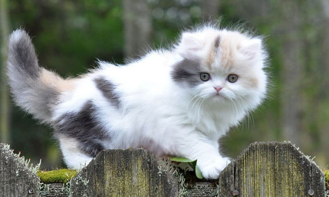
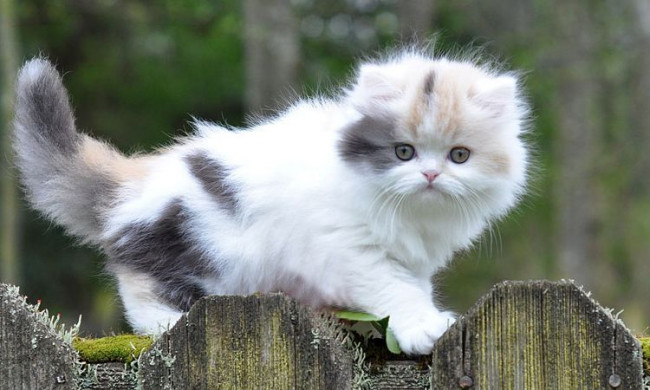

Котики
Рід хижих ссавців родини котових (Felidae). У деяких старіших системах класифікації до нього зараховували всіх представників малих кішок (Felinae), проте зараз безпосередньо до роду відносяться лише кілька видів невеликих тварин, що мешкають у Євразії та Африці.

 

Собачки
Культигенна тварина. Термін застосовують як для домашніх, так і для бездомних тварин. Свійський пес був одним з найбільш широко застосовуваних службових та компанійських тварин протягом всієї історії людства.